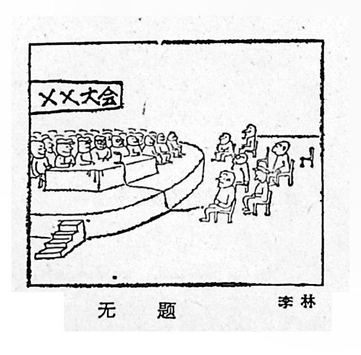

李林 《人事》1988年第3期（总第30期），第42页
无题
Untitled
- Text in the drawing
- ××大会
XX Congress - Description
- At a congress, the rostrum of seated dignitaries curves round and spills down into the hall, so that only a handful of ordinary delegates are left sitting on chairs in one corner.
- Note
- Mocks the oversized presidiums (主席团) of 1980s congresses and meetings, in which seats on the platform were a mark of rank.
- Artist
- Li Lin 李林
- Published in
- 《人事》1988年第3期（总第30期）, p. 42
- Themes
- Formalism · Privilege

Cite
Li Lin, “无题” [Untitled], Renshi (Personnel) 《人事》, 1988, no. 3, p. 42.